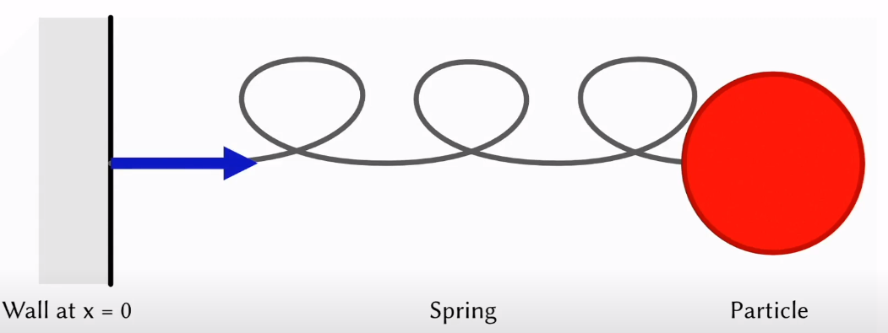

import numpy as np
import plotly.graph_objects as go
from plotly.subplots import make_subplots
from IPython.display import display, IFrame, HTML

Given a particle of mass $m$
so that the generalized velocity is $$\dot q = v(t)$$
In 1-D the kinetic energy is $\frac 12 mv^2 = \frac 12 m\dot q$
By Hooke's Law, force is linearly proportional to stretch in spring, i.e. $$f = -kx$$ for some stiffness coefficient $k$, then the total mechanical work is $$W = \int \underset{\text{force}}{-kx(t)}\underset{\text{displacement}}{v(t)} dt = \int -kx dx = -\frac12kx^2$$ and the potential energy is the negative of work $$V = -W = \frac12 kx^2$$
Therefore, we have $$L = \frac12 m\dot q^2 - \frac12 kq^2$$ By Euler Lagrange Equation \begin{align*} \frac{\partial L}{\partial q} &= \frac{d}{dt}\frac{\partial L}{\partial \dot q}\\ -kq &= \frac{d}{dt}(m\dot q)\\ -kq &= m\ddot q\\ \end{align*}
Note that $q:\mathbb R\rightarrow \mathbb R$ is the mapping from time to the position of the particle at that time. Time integration
Note that we have a second-order ODE, $m\ddot q = -kq$, replaces $\dot q $ with velocity $v$, we can transform the system into a coupled first order ODE $$m\dot v = -kq$$ rewrite into matrix form $$\begin{pmatrix}m&0\\0&1\end{pmatrix}\frac{d}{dt}\begin{pmatrix}v\\q\end{pmatrix} = \begin{pmatrix}0&-k\\1&0\end{pmatrix}\begin{pmatrix}v\\q\end{pmatrix}$$ Denote $\mathbf y = [v, q]^T$, the equation above is further written as $$A \dot{\mathbf y} = \mathbf f(\mathbf y)$$
We define the phase space as the x-axis being the value of $v$ and y-axis being $q$, so that we can plot the trajectory of the position and velocity through time.
Note that the integration above is simple, while more complex equations may not be suitable for analytical solution, so we need integrate it numerically
class TimeIntegration:
def __init__(self, mass, stiffness, dt, q0, v0):
"""
mass: the mass of the object
stiffness: the stiffness coefficient of the spring
dt: Delta t for each step taken
q0: the initial position at t0
v0: the initial velocity at t0
"""
self.m = mass
self.k = stiffness
self.dt = dt
self.q0 = q0
self.v0 = v0
self.trajectory_q = [q0]
self.trajectory_v = [v0]
def one_step(self):
raise NotImplementedError
def run(self, step):
for _ in range(step):
self.one_step()
def plot(self, step, output_file):
self.run(step)
fig = make_subplots(rows=1, cols=2,
subplot_titles=('Object', 'Phase Space'),
column_widths=[0.7, 0.3])
fig.add_trace(go.Scatter(x=[0, self.q0], y=[0, 0], marker_size=10), 1, 1)
fig.add_trace(go.Scatter(x=[self.q0], y=[self.v0], marker_size=3), 1, 2)
fig.frames = [go.Frame(data=[go.Scatter(x=[0, self.trajectory_q[i]]),
go.Scatter(x=self.trajectory_q[:i], y=self.trajectory_v[:i])],
traces=[0,1]) for i in range(len(self.trajectory_q))]
button = dict(
label='Play',
method='animate',
args=[None, dict(frame=dict(duration=25, redraw=False),
transition=dict(duration=0),
fromcurrent=True,
mode='immediate')])
fig.update_layout(updatemenus=[dict(type='buttons',
showactive=False,
y=0,
x=1.05,
xanchor='left',
yanchor='bottom',
buttons=[button] )
],
width=800, height=460, showlegend=False)
fig.update_xaxes(range=[-3, 3])
fig.update_yaxes(range=[-20, 20])
fig.write_html(output_file, full_html=False, auto_open=False, include_plotlyjs="cdn", auto_play=False)
display(IFrame(output_file, height=480, width="100%"))
mass = 1
stiffness = 100
dt = 0.01
q0 = 1
v0 = 1
Replace time derivative with finite difference $$\dot{\mathbf y} \approx \frac{1}{\Delta t} (\mathbf y^{t+1} - \mathbf y^t)$$ so that \begin{align*} A \frac{1}{\Delta t} (\mathbf y^{t+1} - \mathbf y^t) &= \mathbf f(\mathbf y^t)\\ \mathbf y^{t+1} &= \mathbf y^t + \Delta t A^{-1}\mathbf f(\mathbf y^t)\\ v^{t+1} &= v^t - \Delta t \frac{k}{m}q^t\\ q^{t+1} &= q^t + \Delta t v^t \end{align*}
Because we replace the derivative with the current "slope", the trajectory is going outwards, which is unstable.
class ForwardEuler(TimeIntegration):
def one_step(self):
q_t = self.trajectory_q[-1]
v_t = self.trajectory_v[-1]
self.trajectory_v.append(v_t - self.dt * self.k / self.m * q_t)
self.trajectory_q.append(q_t + self.dt * v_t)
fe = ForwardEuler(mass, stiffness, dt, q0, v0)
fe.plot(200, "./assets/1d_mass_spring_fe.html")
To fix the issue with Forward Euler, we can average several "slope" to pull the trajectory back. The general idea is $$\mathbf y^{t+1} = \mathbf y^t + \Delta t A^{-1}(\alpha \mathbf f(\mathbf y^{t+a} + \beta \mathbf f(\tilde{\mathbf y}^{t+b})))$$ where $\tilde {\mathbf y}^{t+a} = y^t + \alpha \Delta tA^{-1}\mathbf f(\mathbf y^t)$ is the Forward Euler estimate.
Following this template, we can have Heun's Method by taking $a=0, b= 1, \alpha=\beta=\frac12$ $$\mathbf y^{t+1} = \mathbf y^t + \frac{\Delta t}{2} A^{-1}(\mathbf f(\mathbf y^t) + \mathbf f(\tilde {\mathbf y}^{t+1}))$$
The most general used method is RK4, The Fourth-order Runge Kutta Method. \begin{align*} \kappa_1 &= A^{-1}\mathbf f(\mathbf y^t)\\ \kappa_2 &= A^{-1}\mathbf f(\mathbf y^t + \frac{\Delta t}2 \kappa_1)\\ \kappa_3 &= A^{-1}\mathbf f(\mathbf y^t + \frac{\Delta t}2 \kappa_2)\\ \kappa_4 &= A^{-1}\mathbf f(\mathbf y^t + \Delta t \kappa_3)\\ \mathbf y^{t+1} &= \mathbf y^t + \frac{\Delta t}{6}(\kappa_1 + 2\kappa_2 + 2\kappa_3 + \kappa_4) \end{align*}
class RK4(TimeIntegration):
def one_step(self):
q_t = self.trajectory_q[-1]
v_t = self.trajectory_v[-1]
weights = np.array((1, 2, 2, 1))
kappa = np.empty((4, 2))
kappa[0, 0] = v_t
kappa[0, 1] = - self.k / self.m * q_t
kappa[1, 0] = v_t + self.dt * 0.5 * kappa[0, 1]
kappa[1, 1] = - self.k / self.m * (q_t + self.dt * 0.5 * kappa[0, 0])
kappa[2, 0] = v_t + self.dt * 0.5 * kappa[1, 1]
kappa[2, 1] = - self.k / self.m * (q_t + self.dt * 0.5 * kappa[1, 0])
kappa[3, 0] = v_t + self.dt * kappa[2, 1]
kappa[3, 1] = - self.k / self.m * (q_t + self.dt * kappa[2, 0])
self.trajectory_q.append(q_t + self.dt / 6 * np.dot(kappa[:, 0], weights))
self.trajectory_v.append(v_t + self.dt / 6 * np.dot(kappa[:, 1], weights))
rk4 = RK4(mass, stiffness, dt, q0, v0)
rk4.plot(200, "./assets/1d_mass_spring_rk4.html")
This is the implicit time integration. Compare to Forward Euler, instead of evaluating at the current step, we evaluate at the next time step, i.e. $$A \frac{1}{\Delta t} (\mathbf y^{t+1} - \mathbf y^t) = \mathbf f(\mathbf y^{t+1})$$ Note that the unknown $\mathbf y^{t+1}$ appears on both sides, which causes problem. However, if we look back at $\mathbf f (\mathbf y)$, note that $$\mathbf f (\mathbf y) = \begin{pmatrix}0&-k\\1&0\end{pmatrix}\begin{pmatrix}v\\q\end{pmatrix} = B\mathbf y$$ Since $\mathbf f$ is a linear function, we have \begin{align*} A \frac{1}{\Delta t} (\mathbf y^{t+1} - \mathbf y^t) &= B\mathbf y^{t+1}\\ (I - \Delta t A^{-1}B)\mathbf y^{t+1} &= \mathbf y^t\\ (1+\Delta t^2 \frac km) v^{t+1} &= v^t - \Delta t \frac km q^t\\ q^{t+1} &= q^t + \Delta tv^{t+1} \end{align*} Note that this is stable since the vector difference is the slope at $t+1$, which means it "pulls" back the trajectory to the origin.
class BackwardEuler(TimeIntegration):
def one_step(self):
q_t = self.trajectory_q[-1]
v_t = self.trajectory_v[-1]
v = v_t - self.dt * self.k / self.m * q_t
v = v / (1. + self.dt * self.dt * self.k / self.m)
self.trajectory_v.append(v)
self.trajectory_q.append(q_t + self.dt * v)
be = BackwardEuler(mass, stiffness, dt, q0, v0)
be.plot(200, "./assets/1d_mass_spring_be.html")
Note that Forward Euler causes the exploding trajectory and the Backward Euler causes damping, we can do the two integrations alternately to "cancel out" long term effect, i.e.
First take an explicit velocity step $$v^{t+1} = v^t - \Delta t \frac km q^t$$ Then take an implicit position step $$q^{t+1} = q^t + \Delta t v^{t+1}$$
class Symplectic(TimeIntegration):
def one_step(self):
q_t = self.trajectory_q[-1]
v_t = self.trajectory_v[-1]
v = v_t - self.dt * self.k / self.m * q_t
self.trajectory_v.append(v)
self.trajectory_q.append(q_t + self.dt * v)
sc = Symplectic(mass, stiffness, dt, q0, v0)
sc.plot(200, "./assets/1d_mass_spring_sc.html")